Kung-fu, Karatê, briga de rua e até a brasileiríssima capoeira entram em cena neste jogo que conquistou quem gostava das boas brigas virtuais. Quem acompanhou a série Tekken desde do primeiro jogo reconhece algus personagens, e os pessonagens secretos por exemplo o Gon. Tekken 3 pode ser jogado com uma ou duas pessoas, com diversos tipos de competições:
três rounds;
Um round;
Arcade;
Teste de sobrevivência;
Teste de tempo;
Luta entre times;
Jogo de bola na praia (objetivo é não deixar a bola cair, dando chutes e socos no adversário);
Tekken Force
Quando o jogo começa podemos escolher 10 jogadores. para revelar jogadores secretos é presciso vencer no modo Arcade diversas vezes. Cada vitória recela um novo personagem. Já para poder com o Dr Boskonovich é presciso vencer no modo Tekken Force, nada menos do que 4 vezes, e pode acreditar que esse será seu maior desafio.
Neste tipo de jogo o lutador vai caminhando por diferentes cenários, e tem que enfrentar inimigos que surgem de todas as partes. Esse é o jogo mais dificil de Tekken 3, voce ganha uma chave cada vez que consegue chegar ao final. Ao juntar três chaves voce tem a chance de encontrar o Dr Boskonovich. Para se dar bem, o importante é não ser atingido e todos os frangos de energia. Os melhores personagens para vencer o Tekken Force são Paul e Jin, que conseguem derrotar a maioria dos adversários com um só chute e são rápidos para se defender.
| 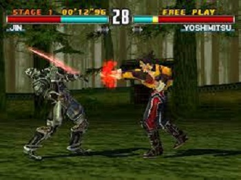 | 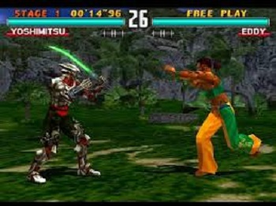 |
| 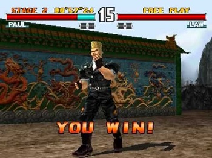 | 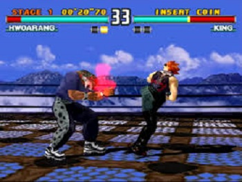 |
O velho Heihachi que voce ja conhece de tekken 2, montou um grupo de missionarios que está acabando com as guerras em todos os cantos do mundo. Com isso, ele pretende conseguir respeito e prestigio, e assim dominar o mundo através da paz. No entanto, seus soldados acabam encontrando o deus da luta, Teshin, que desperta de um sono milenar. O resultado é que lutadores famosos e mestres de artes marciais de todo o mundo começão a desaparecer. Heihachi percebe que Teshin está se alimentando da alma de grandes lutadores, e decide que dominar o deus da luta seria uma maneira mais rápida de conquistar o mundo. O velho resolve então atrair o deus organizando a terceira competição de luta King of Iron Fist Tournament (algo como O torneio do rei do punho de ferro), que reúne os maiores mestres da terra. "Vai começar o Tekken 3."
| 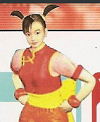 | A pequena Ling adora parques de diversão, e seu sonho é construir o mais belo parque do mundo na China. Para conseguir o dinheiro, ela vai atrás de Heihachi, mas derruba a todos com seus golpes certeiros. Quanto o velho chega, ela propões um desafio: caso consigo ganhar o campeonato, ele construirá o parque. sem acreditar nos poderes da garota, Heihachi aceita. |
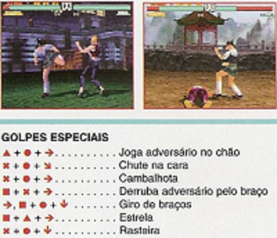
| 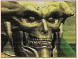 | Este samurai foi salvo da morte pelo Dr Boskonovich. Ao saber do desaparecimento dos lutadores, Yoshimitsu procura o doutor, e descobre que ele contraiu uma misteriosa doença, além de estar trabalhando em uma maquina para ressucitar a filha. Como o Dr Boskonovich acredita que só o sangue do deus da luta poderá trazer sua filha e sua saúde de volta Yoshimitsu entra no grande campeonato de luta para tentar ajudar o amigo. |
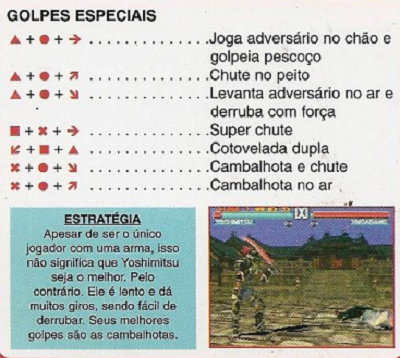
| 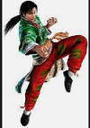 | Voce ja conhece este super policial de tekken 2. Desta vez Lei está investigando o desaparecimento dos mestres de artes marciais, quando inesperadamente é visitado por Heihachi. O policial é convidado a participar dos combates de The King of Iron Fish Tournament 3. Apesar de não entender o motivo do convite, lei aceita, pois acredita que poderá descobrir algo sobre o caso que investiga. |
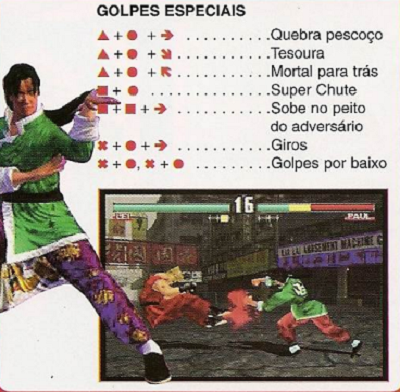
| 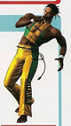 | Eddy era de uma rica familia brasileira. Quando ele tinha 19 anos, seu pai foi morto por estar tentando acabaar com uma quadrilha de tráfico de drogas. Suas útimas palavras foram para que o filho fingisse de assassino e se escondesse na cadeia, pois só lá estaria seguro. Eddy obdeceu, e na prisão aprendeu a jogar capoeira. Depois de treinar por 8 anos ele foge e vai para o campeonato, na esperança de obter ajuda para vingar o pai. |
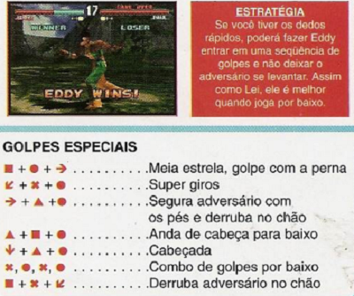
| 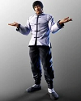 | Filho de Marshall Law, Forest treina artes marciais com seu pai, mas é proibido de competir fora da academia da fanilia. Certo dia, seu amigo Paul Phoenix passa na academia e insiste para que ele participace da grande competição The King of Iron Fist Tournament. Para convencê-lo Paul afirma que Forest luta melhor do que o pai. Por causa disso, Forest acaba aceitando o desafio, acreditando que se ganhar as lutas poderá cuidar da academia de familia com mais orgulho. |
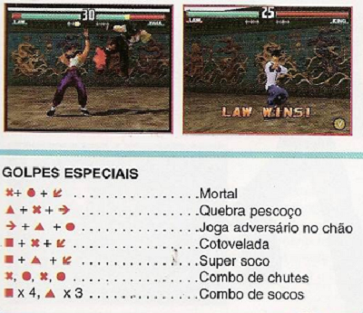
| 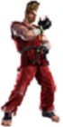 | No último campeonato, Paul chegou à final, mas um acidente de carro impediu que ele chegasse ao local da luta a tempo. Apesar de ter tido uma carreira invejavél. Paul sempre achou que precisava vencer o King of The Iron Fist para prrovar que é realmente um bom lutador. Para sua surpresa, ele é convidado para a terceira competição e aceita o desafio. |
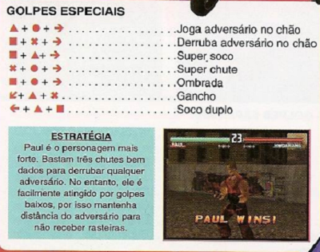
Depois que a filha do Dr Boskonovich morreu, ele construiu uma máquina para manté-la congelada e tentar ressucitá-la. Para garantir que tudo desse certo, ele capturou Nina para ser a cobaia de suas experiências. Nina ficou congelada por 15 anos, mas quando o deus da luta despertou tomou posse do seu corpo. Agora ela entra np campeonato dominada pelo deus, obedecendo a ordem de matar Jin Kazama. |
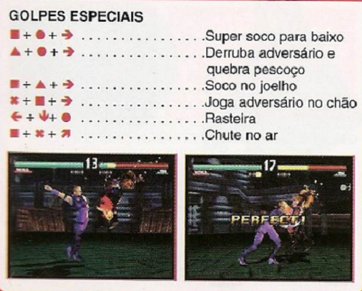
| 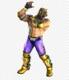 | Voce lembra do King de Tekken 2? Ele tinha um orfanato, e este lutador era uma das crianças que morava lá. Quando king foi assassinado, este personagem decidiu usar a máscara de onça para substituir seu mentor, e se transformou em King Segundo. Agora, King Segundo descobriu que o primeiro King morreu por causa do deus da luta, e entra no campeonato para vingá-lo. |
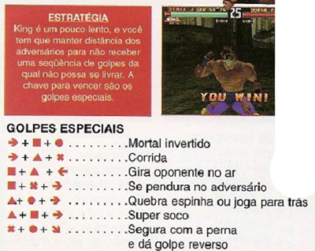
| 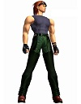 | Este aluno de Tae Kwan Do gosta de desafiar pessoas para lutas, apostando dinheiro. Primeiro ele se finge de fraco, para depois acabar com os oponentes e levar o dinheiro. Certa vez, ele desabafa Jin Kazama, e é derrotado pela primeira vez. Quando ia contar a má notícia a seu mestre, descobre que ele é uma das vitimas do deus da luta, Agora, o objetivo de Hwoarang é derrotar Jin Kazama no campeonato e se vingar do deus da luta. |
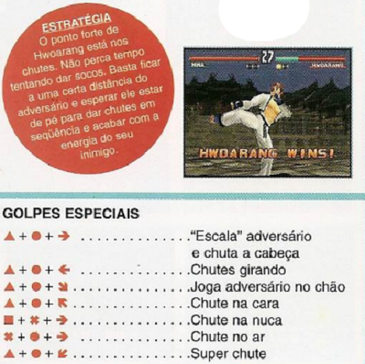
| 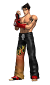 | Aos 15 anos, Jin descobre que é filho de Kazuya, o lutador mais famoso de Tekken 2. Ao mesmo tempo sua mãe morre. Ele procura a ajuda do avô, Heihachi, que o ensina a lutar judô e Karatê. Seu objetivo agora, aos 19 anos, é derrotar o deus da luta que ele acredita ser responsável pela morte da mãe. |
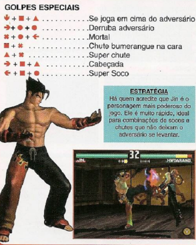
| 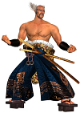 | Heihashi conseguiu o dominio do grupo empresarial Mishima Finacial Empire derrotando o próprio filho. Certo dia ele descobre que Jin Kazama é seu neto. É ao saber da morte da mãe de Jin que ele desconfia que o deus da luta está se alimentando da alma de guerreiros, e decide treinar Jin para servi de isca no terceiro King of the Iron Fist Tournament. E não duvide de que este avô seria capaz de matar o próprio neto no final. |
.png)
| 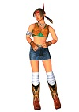 | Julia foi abandonada no território de uma tribo indigena e acabou sendo criada por Michelle Chang. Ela cresceu como uma nativa norte americana, e foi treinada para defender sua tribo. Quando as histórias sobre os desaparecimentos dos lutadores chegam à tribo, eles percebem que o deus da luta despertou, e temem que ele procure a chave para os tesouros dos índios. Michelle vai ao Japão consultar Heihachi, mas nunca volta. Julia então entra no campeonato para descobrir o que aconteceu. |
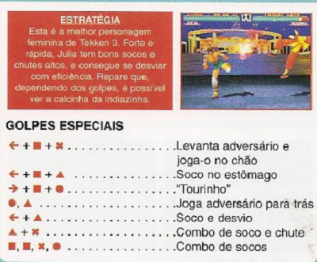
| 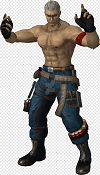 | Brian era um policial que foi morto em um tiroteio. Seu corpo foi levado ao laboratório do Dr Abel, rival dp Dr Boskonovich, que o transformou em um replicante, com inteligência artificial. no entanto, abel não focou sastifeito com esse feito, e usou Brian para tentar obter informações de Boskonovich, que havia ressucitado Yoshimitsu com mais perfeição. Brian entra no campeonato para vencer o samurai e obter as informações. |
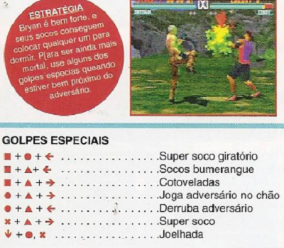
| 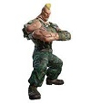 | Durante uma guerra bacteriológica, o robô militar Jack 2 regatou a garotinha Jane, de 9 anos mas foi destruido em seguida. Jane ficou traumatizada e guardou os restos do seu herói. Ao crescer e virar médica, Jane conseguiu retaurar 90% de Jack mas não conseguiu resgatar o lado humano do robô. Analisando o programa de Jack 2, Jane descobriu que ele havia sido feito por Heihachi, e que havia planos de construir um super soldado, Jame executa os planos, e assim nasce Gun Jack. |
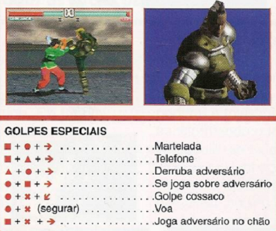
| 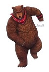 | Este ursos são apaixonado pela pequena Xiaoyu, e estão decididos a impressioná-la no campeonato. Além estão decididos a impressioná-la no campeonato. Além disso, Kuma possui uma briga pessoal com Paul Phoenix, e pretende derrotá-lo de qualquer forma. |
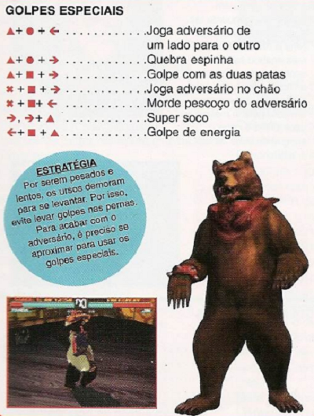
| 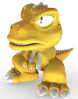 | Este dragãozinho divertido é, na realidade, um famoso personagem de história em quadrinhos japonesas. Ele aparece em Tekken 3 como um personagem extra, tanto que nem é exibido na tela de seleção de personagens. Mesmo assim, lutar com ele pode ser bem eficiente. |
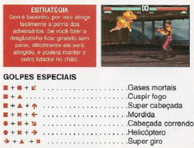
| 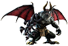 | Depois de ser derrotado por algum lutador, o deus da guerra personificado em Ogre se alimenta da alma de Heihachi e se transforma neste monstro horrendo, que voa e solta fogo pela boca. Teoricamente, ele é o personagem mais poderoso do jogo, e seu desafio final no King of Iron Fist Tournament. |
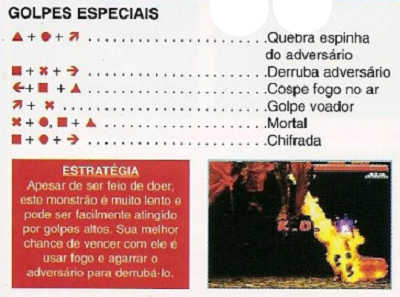
| 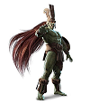 | Esta é a verdadeira encarnação dos deus da luta. Os Indios Americanos acreditam que ele foi deixado na terra por alienígenas, há muito tempo atrás. Entre seus poderes está a capacidade de absorver qualquer ser vivo ou coisa artificial. Ao ser acordado, ele parte em busca de almas fortes para se alimentar. |
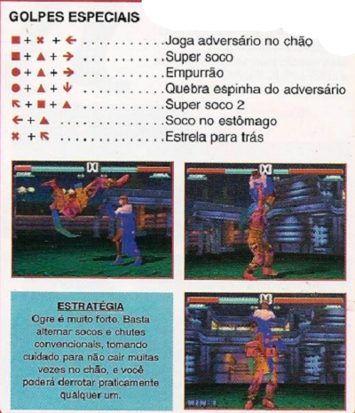
| 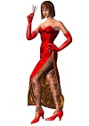 | Irmã de Nina, as duas viviam brigando. Ao saber que Nina seria cobaia de Dr Boskonovich, Anna não Suportou a Idéia de envelhecer enquanto a irmã ficava congelada, e se ofereceu para também participar da esperiência. Quando o destruidou as duas voltaram à vida, mas Nina perdeu a memória e Anna não. Agora, ela sente que, ao invés de lutar, seu dever é impedir que a irmá se torne uma assassina. Para isso, Anna entra no King of Iron Fist Tournament e tenta salvar a alma de Nina. |
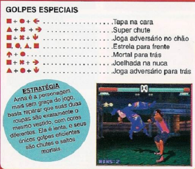
| 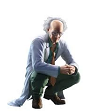 | Este Médico conseguiu salvar a vida de Yoshimitsu mas não encontrou a cura para a misteriosa doença da filha. Ele a mantém congelada, enquando faz suas pesquisas usando Nina e Anna de cobaias mas acabou sendo contaminado por um virus artificial Agora, sua unica esperança de encontrar uma cura para si mesmo e para filha é obter o sangue do deus da luta. |
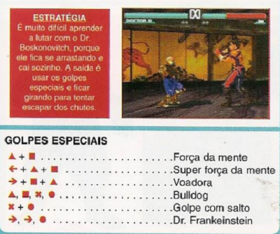